Notes and Miscellaneous
Cauchy-complete categories and lax additivity
Notes (pdf, 1.533kB) and Proof Compendium (pdf, 472kB)
Supplementary Material to a Seminar Talk I gave in the "Higher Structures" Seminar 2024 in Hamburg. Using the technology of Cauchy-complete enriched ∞-categories, I give a very conceptual proof of the universal characterization of the (∞,2)-category of profunctors as the free lax semiadditive category, up to idempotent completion. I generalize it to enriched profunctors and skech a connection to (higher) multifusion categories.
Cauchy-completions and higher idempotents
Notes: Cauchy-completions and higher idempotents (pdf, 1.200kB)
Notes to an online talk I gave at the Mathematical Physics group seminar in Vienna 2024. I introduce the notions of Cauchy-complete categories and absolute colimits, go through several examples, and elaborate their application to phyics through higher idempotents and higher multifusion categories.
Functor of Points and Superschemes
Functor of Points and Superschemes (pdf, 502kB)
Notes to a Seminar Talk I gave in the Seminar "Supergeometry" 2021 in Heidelberg. Including an introduction to the Yoneda Lemma, and applications of the Functor-of-Points point of view on (Super-)manifolds and (Super-)schemes.
